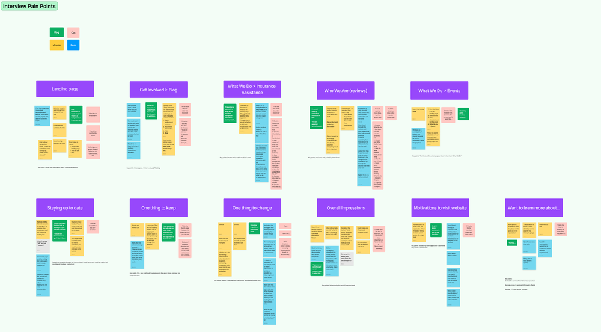
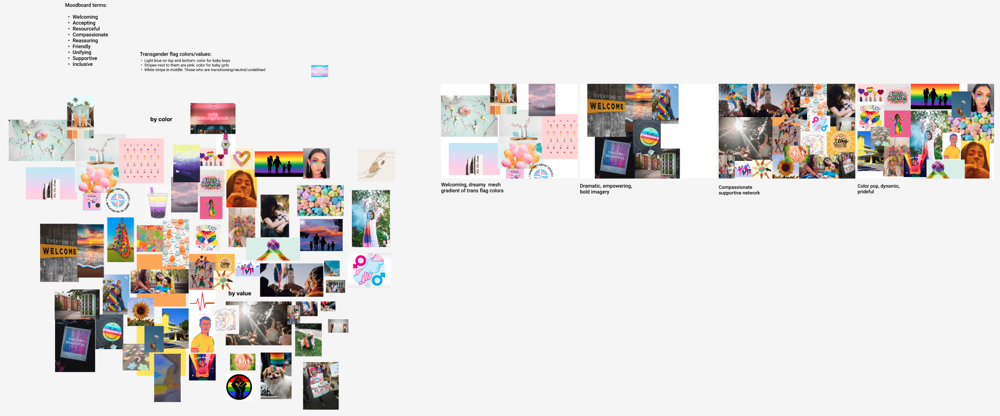

TransFamily Support Services
As part of UC San Diego's Design Co 10 week summer design and marketing initiative, Build Up, my team was paired with TransFamily Support Services. TransFamily Support Services is a San Diego based LGBT non-profit that aims to be a one stop shop for helping transgender youth navigate through their journey
RESEARCH / UX DESIGN / WEB BUILDING
Discovery Phase
We had a lot to learn about the site and industry including information architecture, possible usability heuristics that are violated, and how the site stacks up compared to other non-profits.
1.
SITE MAP
A site map allowed us to get a birds eye view of the website as well as learn the site’s organization.
2.
WEB AUDIT
Based on Usability Heuristics, we skimmed through the site and found possible pain points to work with.
3.
ANNOTATIONS
We annotated the home page as a way of presenting usability issues to our stakeholders.

4.
COMPETITIVE ANALYSIS
Allowed us to gain inspiration and learn from existing sites that serve a similar purpose.

Empathizing with Users
After learning an adequate amount about the site, we moved on to user research.
Who primarily visits the site? What do people who visit the site want to accomplish? How do people navigate through the site? Can we improve event engagement through the site?
We went to work interviewing and surveying users in hopes of finding answers to these questions.

The thing we hear most from families is I wish I had found you sooner.
Kathie Moehlig
TFSS Executive Director
1.
SURVEY
We surveyed and interviewed users to gather usability insights for us, and demographic information for the organization.
2.
AFFINITY MAPPING
We created an affinity map from interview insights and grouped them by difficulties users encountered when completing usability tasks.
3.
COMPETITIVE ANALYSIS
Based on pain points from our Usability Heuristics and survey and interview data, we conducted another competitive analysis.
4.
USER PERSONA SPACES/EMPATHY MAPS
We created empathy maps based on user demographics and wants and needs to personify pain points and better empathize with users.
TRANSLATING USER RESEARCH INTO A PROBLEM STATEMENT
How might we create a more accessible online identity for TransFamily Support Services in order to increase discoverability and provide more support for transgender and nonbinary individuals as well as their loved ones?
Ideation
Now that we had user research out of the way, we could start brainstorming and ideating on screens for the website. As a team, we did a mind map and crazy 8s to rapidly formulate and organize ideas.
Information Architecture
One major thing I wanted to tackle was the information architecture of the site. As it currently stood, the site was largely unorganized as revealed by our usability tests and stakeholders. I created more site maps in an attempt to address this.
I created a site map V2 as a first attempt at reorganizing the site with their current navigation bar. I made an effort to reduce clutter and moved pages around based on usability testing insights.
After deliberation with stakeholders, we decided to scrap the current navigation bar and include an events section to officially give events a home as well as a donate button to promote funding.
Site Map V2

Site Map V3

Wireframes
With research and ideation out of the way, we could finally focus on the design portion of the project. One of the first things we did was make wireframes as a quick and easy method of testing screen features and layouts.
Branding
Since we were doing a major overhaul of the website, we also needed to tackle branding. We started this off by creating mood board around the transgender flag colors since the organization expressed interest in these colors.
Design System
Now that we had an idea of what mood the organization wanted to go for, we could start on creating a design system and experimenting with different components for the website.
1.
FOOTER
We created different variations of a footer for the website. After consulting with our stakeholder, we settled on the top left.
2.
TYPOGRAPHY
The site currently uses Arial. We wanted to shake things up by experimenting with typefaces. We ended up settling on Avalon.
3.
STYLE GUIDE
We settled on a color palette based off colors from the trans flag. We also incorporated gradients for a more bold feel.

4.
BUTTONS
We experimented with buttons that stayed consistent with the brand of the organization. We decided to primarily use the light blue buttons.
Hi Fidelity Prototypes
Based on elements from our design system as well as our wireframes, we made hi-fi prototypes for major pages in the site for usability testing and implementation purposes. Pages can be seen in greater detail here.

Navigation Bar
Old

New
Final Information Architecture
We conducted Usability testing on our hi-fidelity prototypes to ensure the site was easy to navigate and usable. We used the insights from this usability test to create the final form of our navigation bar.

Implementation
Now all that was left was to implement the pages on WordPress, the organization’s web builder of choice. We used Divi to build the pages and followed the hi fidelity prototypes to the best of our ability.
Landing Page

Old

New
What We Do
Old

New
Who We Are
Old

New
FAQ
Old
New
Next Steps
If given more time and resources to work with TransFamily Support Services, we would:
- Thoroughly plan out components for A/B testing
- Include more usability tests for our final round of validation
- Implement remaining website pages, navigation bar, and footer
Takeaways
Design is a bumpy road
The process of designing beautiful experiences can be anything but beautiful. Embrace the chaos and jump at every opportunity to improve.
Communication is Key
Whether it be with stakeholders or other group members, communication and trust at every step of the way led to efficient and effective progress.
Deadlines are Crucial
Setting dates for when we wanted to have deliverables finished held group members accountable and ensured we progressed (even if it was all mostly done the night before).
Get Feedback
Our end product was greatly improved thanks to feedback from our mentors (Tarrea Tolbert, Alex Li, & Chynna Tumalad), our TFSS point of contact (Aspen Everhart), and other builders.